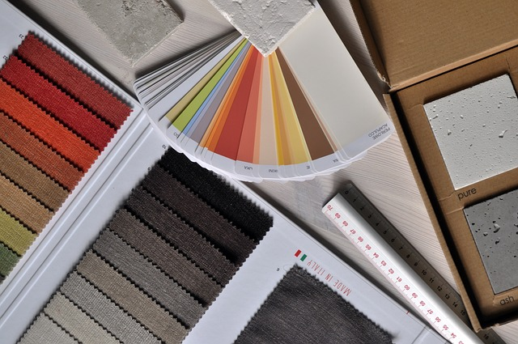

Tetsuji
Yashiki
About
PROFILE
私は今年の２月から５月までの４か月間、大阪府職業訓練 "Webデザイン＋プログラミング基礎科" でWEB製作やプログラミング技術の職業訓練を受講していました。このコースでは、HTML、CSS、JavaScript、およびPHPを使用したウェブ開発の基礎から、PhotoshopやIllustratorを活用したグラフィックデザイン技術に至るまで、幅広いスキルを学ぶことができました。
訓練では、ユーザーにとって魅力的かつ機能的なウェブサイトを設計・実装するための技術を学びました。これまでに、UI/UXの設計、動的サイトの構築、そしてポートフォリオサイトの製作と様々な実習を行ってきました。これらの経験を生かし、Webデザイナー、Webプログラマーとして、クリエイティブで技術的な解決策を提供するプロフェッショナルになることを目指しています。
将来的には、技術とデザインの両面で優れたウェブサイトを作り上げることで、ユーザーにとって価値ある経験を提供していきたいと考えております。また、チームで協力しながら新しいアイデアを形にしていく過程を大切にし、常に学び続けることで、業界での成長を遂げていきたいと思います。どうぞよろしくお願いいたします。
SKILL
職業訓練歴
Adobe：Photoshop、Illustrator、XD、PremierePro
言語：HTML、CSS、PHP、JavaScript
学習歴
Vs-Code、Git、Git-hub、Docker、AWS、Chat-Gpt、他
言語：Pytho、Linux
Works
こちらをクリック！
ポートフォリオ集
-

グラフィックデザイン技術
PhotoshopやIllustrator、adbe-XDを使用したWebデザインとデザインカンプ作成
【計画】デザインカンプ(figma)、バナーやLP(gimp)をリンク付け予定、使用した技術を紹介 -
コーディング、プログラミング技術
3.タスク管理アプリ※ユーザーがタスクを追加し、完了したタスクにチェックを入れて管理できるタスク管理アプリ
HTMLでのWEB基本構成、CSSで各種装飾、javaScriptとPHPで動的なサイトの作成
JavaScriptとPHPの基本から応用までを学び、Webフォームの処理やセッション管理を実践。実用的なスキル
【計画】htmlとcssをベースにしてjsやPHPで部分的なプログラムを製作、使用した技術を紹介WEBサイト製作
サイト構成、デザイン、視覚的魅力と機能性を両立させ、SEO対策も考慮する
【計画】簡単な架空の商業サイトを制作予定、使用した技術を紹介